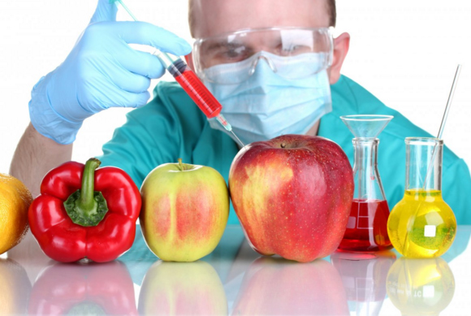

10 thực phẩm gây ung thư cao kinh hoàng

1. Thực phẩm biến đổi gene (GMO):
- Thực phẩm biến đổi gene là một ngành công nghiệp đang lên với lợi nhuận béo bở. Hiện vẫn còn những tranh cãi xung quanh việc thực phẩm GMO có làm tăng nguy cơ phát
triển khối u ở ngoài hay không. Dù vậy,
rất nhiều nhà khoa học đứng về phe "Có".
2. Bắp rang bơ quay lò vi sóng
- Bắp rang bơ quay lò vi sóng là một món ăn vặt khoái khẩu của nhiều người, nhất là trong những buổi tối sum họp gia đình, quây quần quanh chiếc TV
thưởng thức bộ phim yêu thích. Tuy nhiên, bạn phải hết sức cẩn thận với loại thực phẩm này.
- Có thời gian, người ta cho rằng việc hít mùi thơm từ gói bắp rang bơ tỏa ra có thể gây ung thư phổi. Điều này đã được chứng minh là sai sự thật, nhưng khoa học lại tìm
thấy một tử thần khác. Chất độc này nằm trong lớp chống dính ở mặt trong túi đựng bỏng, khi được quay ở nhiệt độ cao sẽ phân hủy thành hợp chất acid perfluorooctanoic,
tăng nguy cơ ung thư. Ngoài ra, viền keo dán quanh túi cũng có thể tiết ra những chất cực độc khi túi bỏng được quay nóng.
3. Thực phẩm đóng hộp
- Nếu như bạn nghĩ đồ hộp an toàn và vệ sinh thì hãy nghĩ lại. Hầu hết các vỏ hộp đều chứa chất BPA-A. Theo trang breastcancerfund.org, ngay cả khi tiếp xúc với một
lượng nhỏ BPA-A thì cơ thể cũng có nguy cơ mắc ung thư vú, ung thư tuyến tiền liệt và nhiều chứng rối loạn khác.
4. Thịt đỏ nướng
- Gần như tất cả mọi người đều mê mệt món bít -tết nướng than mềm, mọng nước và thơm lừng. Tuy nhiên, các nghiên cứu khoa học đã phát hiện thấy cách
chế biến thịt bò kiểu này sẽ làm giải phóng các amine heterocylic, một chất sinh ung thư phổ biến. Còn theo Viện Ung thư Quốc gia Mỹ, việc nấu thịt
ở nhiệt độ rất cao như trên than mọi sẽ tạo ra những chất sinh ung thư mạnh và làm tăng nguy cơ phát triển khối u ác tính.
5. Đường tinh luyện
- Lần tới, khi cầm trên tay một chiếc bánh quy thơm lừng được làm bằng bột và đường tinh luyện, tốt nhất là bạn nên nghĩ lại và đặt nó xuống. Không,
không phải là vì nguy cơ sâu răng hay tăng cân đơn giản. Trên thực tế, chúng ta đang tiêu thụ nhiều đường tinh luyện hơn bao giờ hết, và điều này
thực sự nguy hiểm. Không chỉ làm tăng nguy cơ béo phì, tiểu đường mà đường tinh luyện còn là tác nhân gây ra nhiều dạng ung thư như ung thư vú, tiền
liệt, bàng quang, tuyến tụy và trực tràng, trang Cancercenter.com khuyến cáo.
6. Soda
- Ai lại không thèm một ly soda mát lạnh trong một ngày nóng vã mồ hôi cơ chứ? Tuy nhiên, loại thức uống khoái khẩu này lại đẩy bạn tới chỗ nguy hiểm. Theo Trường Đại học Sức khỏe
cộng đồng John Hopkins Bloomberg, việc uống hơn 1 ly soda mỗi ngày sẽ khiến cơ thể bạn tích tụ và sản sinh ra nhiều 4-methylimidazole,
một chất có khả năng gây ung thư.
7. Thịt đã qua chế biến
- Có rất nhiều món ăn được làm từ thịt chế biến như sandwich, xúc xích, thịt hun khói... Những loại thực phẩm này rất nhiều muối và chứa nhiều chất bảo quản cũng như các hóa chất
có hại cho cơ thể. Nếu như bạn mua thịt xông khói, mọi chuyện còn tệ hơn vì chúng luôn bị nhiễm khói hydrocarbons carcinogenic polycyclic,
gần giống như khi bạn hút thuốc lá vậy.
8. Chất tạo ngọt nhân tạo
- Bạn tưởng rằng mình có thể tránh được nguy cơ ung thư hoặc "bỏ đói" các tế bào ung thư bằng cách không ăn đường tinh luyện nữa? Bạn nghĩ rằng các chất tạo ngọt
nhân tạo an toàn và lành mạnh hơn? Sai hoàn toàn.
9. Dầu ăn chưa bão hòa
- Về cơ bản thì dầu chưa bão hòa là dầu thực vật, được chiết xuất từ các loại cây/thực vật thông qua một quy trình hóa học phức tạp. Trong dầu chưa bão hòa có chứa một lượng lớn acid
béo Omega 6. Chất béo chuyển hóa này có thể gây tăng nguy cơ đau tim hoặc một số dạng ung thư như ung thư da, ung thư tuyến tụy, trực tràng...
10. Khoai tây chiên dạng lát
- Ai lại không thích những lát khoai tây chiên vàng rụm, giòn tan cơ chứ? Thế nhưng đừng quên rằng chúng luôn được chiên ngập dầu và chứa lượng chất béo
cực cao, đó là chưa kể các chất tạo hương vị nhân tạo và chất bảo quản nữa. Theo Hiệp hội Ung thư Mỹ, khi được chiên ở nhiệt độ cao, một hoạt chất có
tên acrylamide sẽ được sản sinh, đây là chất gây ung thư thường được tìm thấy ở thuốc lá.
Kết luận
- Dù rất nhiều loại thực phẩm được liệt kê ở trên rất ngon, khoái khẩu, nhưng việc ăn chúng quá nhiều hàng ngày chắc chắn sẽ khiến cơ thể bạn phải gánh chịu hậu quả.
Hãy tìm kiếm những thực phẩm thay thế mà không chỉ ngon miệng, còn phải an toàn và lành mạnh nữa. Đừng bao giờ quên rằng, cái miệng có thể hại cái thân đến mức nào.